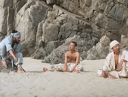

매거진 삼삼오오 · 프리뷰
바얌섬
빙글빙글 빙글빙글

빙글빙글 빙글빙글
임진왜란때 거북선을 타고 전쟁에 나갔던 세 청년이 한 무인도에 표류했다. 세 사람은 섬 밖으로 나가기 위해, 또 삶을 계속 이어나가기 위해 몸부림을 친다. 그러나, 섬에서는 기이한 일들이 일어난다. 어느 여인의 오래된 시체가 발견되기도 하고, 손톱 먹은 쥐가 인간 행세를 하기도 하고, 신비로운 여인들이 밤의 어둠 속에서 나타나기도 한다. 문득, 생각이 든다. 이 섬은 뭐고, 이 사람들은 뭐고, 이 상황들은 뭘까?
김유민 감독의 독립 장편데뷔작인 <바얌섬>은 감독의 이전 단편 <망>처럼 조선시대 한국을 배경으로 판타지적인 세계를 영화 안에 펼쳐 놓는다. 고전 전래동화에서 영감을 받은 듯한 여러 가지 설정들과 아름다운 서해 어느 외딴 섬의 풍경은 관객들에게 아기자기한 즐거움을 주고 판소리를 활용한 영화의 음악은 시각적인 것들과 어우러지면서 영화 속 세계에 흠뻑 빠지게끔 한다. 마치, 고전 탈놀이극, 혹은 전통 판소리극이 영화의 형태로 우리 앞에 놓인 듯하다.
<바얌섬>은 도전적인 작품이다. 김유민 감독과 배우를 포함한 <바얌섬>의 제작진들은 거의 3주간의 시간동안 실제로 무인도에 머물며 이 영화를 촬영했다고 한다. 그 고생의 결과물일까, 독립영화의 환경으로써는 구현하기 쉽지 않은 배경을 영화는 훌륭하게 소화해내고 있다. 사실, 속세의 먼지가 쌓일대로 쌓여버린 지금의 “독립영화”가 가진 본래 역할을 생각해본다면, 그것은 기성 제도권 영화가 바라보지 않는 지점을 고집스럽게 따라가는 것이다. 따라서, 정말 잘 만든 독립영화는 도전적인 시도를 멋지게 해내고야 만다. 이런 관점으로 미루어 보았을 때 최근 개봉한 독립영화 중 <바얌섬> 만큼 “멋”있는 영화도 드물다.
<바얌섬>은 끝내 우리네 삶을 되돌아보게 만드는 영화이다. 생일이 같지만 나이 대는 다른 세 사람이 삶과 죽음 사이에 있는 어떤 공간에서 벌이는 이 기이한 소동극을 보다 보면 이 사람들이 현실에서 겪었을 생의 모습을 상상하게 만든다. 그 즐거운 상상의 결론으로 우리가 맞이하는 것은 우리 삶 안에서도 존재하는 절절한 사랑과 그것으로부터 온 한(恨)이다. 빙글빙글 빙글빙글 방아돌듯 돌아가는 삶의 챗바퀴, 그 오지 않을 끝을 영화는 집요하게 응시한다. 그 방아 끝에 설인 한풀이를 계속 보다보면, 우리도 어쨌든 살아야 하는 이 삶에 약간의 해원이라도 받을 수 있을 것이다.
- 오오극장 관객프로그래머 김건우